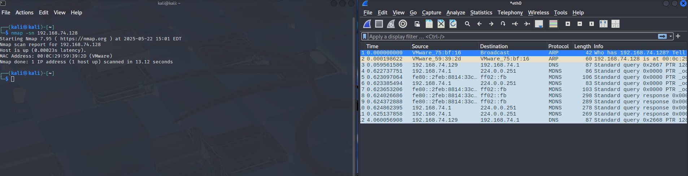
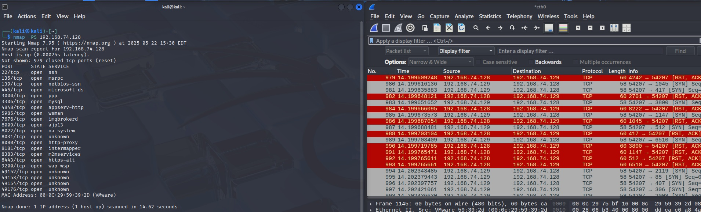

Nmap (Network Mapper) es un programa de código abierto que sirve para efectuar rastreo de puertos escrito originalmente por Gordon Lyon (más conocido por su alias Fyodor Vaskovich) y cuyo desarrollo se encuentra hoy a cargo de una comunidad.
Cuando se usa correctamente, Nmap ayuda a proteger tu red de intrusos. Pero cuando se usa de manera incorrecta, Nmap puede (en casos raros) hacer que te demanden, despidan, expulsen, encarcelen o que tu proveedor de internet te bloquee. Reduce tu riesgo leyendo esta guía legal antes de lanzar Nmap. preguntad antes de usar a no ser que sea un entorno controlado y cerrado (a ti mismo o con VM a otra VM) yo estoy targeteando a una máquina virtual metasploitable windows 2008 Web oficial de Nmap
En esta sección voy a resumir el descubrimiento de hosts
Esta opción indica a Nmap que no realice un escaneo de puertos después del descubrimiento de hosts, y que solo imprima los hosts disponibles que respondieron a las sondas de descubrimiento. Esto se conoce comúnmente como un “escaneo ping”, pero también puedes solicitar que se ejecuten traceroute y scripts NSE para hosts. Por defecto, esta opción es un paso más intrusiva que el escaneo de lista, y a menudo puede usarse para los mismos propósitos. Permite un reconocimiento ligero de una red objetivo sin atraer mucha atención. Saber cuántos hosts están activos es más valioso para los atacantes que la lista proporcionada por el escaneo de lista de cada IP y nombre de host.
El descubrimiento de hosts por defecto realizado con -sn consiste en una solicitud de eco ICMP, un SYN TCP al puerto 443, un ACK TCP al puerto 80 y una solicitud de marca de tiempo ICMP por defecto. Cuando es ejecutado por un usuario sin privilegios, solo se envían paquetes SYN (usando una llamada connect) a los puertos 80 y 443 del objetivo. Cuando un usuario con privilegios intenta escanear objetivos en una red Ethernet local, se usan solicitudes ARP a menos que se haya especificado --send-ip. La opción -sn puede combinarse con cualquiera de los tipos de sonda de descubrimiento (las opciones -P*) para mayor flexibilidad. Si se usan cualquiera de esas opciones de tipo de sonda y número de puerto, las sondas por defecto se anulan. Cuando hay cortafuegos estrictos entre el host origen que ejecuta Nmap y la red objetivo, se recomienda usar esas técnicas avanzadas. De lo contrario, se podrían pasar por alto hosts si el cortafuegos bloquea las sondas o sus respuestas.
Recomiendo usar sudo para que haga menos ruido
sudo nmap -sn 192.168.x.x con este comando, lo que ocurre es que determinamos si hay un host up a través de el protocolo ARP. El protocolo ARP sirve para tratar de asociar una dirección IP a una dirección física (MAC) Manda un paquete ARP a todos los host en la red, si observamos la captura de WireShark, podemos ver como preguntamos: "Oye, quién tiene la ip: 192.168.74.128? Tell 192.168.74.129 (la maquina que ejecuta el comando nmap)"
La máquina que tiene dicha dirección física la recibe y dice yo tengo la dirección física requerida y es esta
con este comando, usando sudo es mejor, por que es menos intrusiva y acabamos obteniendo el mismo resultado.
Hacemos lo mismo que antes, pero cambiando el último dígito por 0 y añadimos /24 de modo que: sudo nmap -sn 192.168.x.0/24, con este método podemos obtener todos los hosts levantados, y sus respectivas MAC
Esta opción envía un paquete TCP vacío con la bandera SYN activada. El puerto de destino por defecto es el 80 pero se pueden especificar puertos alternativos como parámetro. La sintaxis es la misma que para -p, excepto que no se permiten especificadores de tipo de puerto como T:. Ejemplos son -PS22 y -PS22-25,80,113,1050,35000. Ten en cuenta que no puede haber espacios entre -PS y la lista de puertos. La bandera SYN sugiere al sistema remoto que estás intentando establecer una conexión. Normalmente, el puerto de destino estará cerrado y se enviará un paquete RST (reset) en respuesta. Si el puerto está abierto, el objetivo dará el segundo paso del apretón de manos TCP de tres vías respondiendo con un paquete TCP SYN/ACK. La máquina que ejecuta Nmap entonces termina la conexión incipiente respondiendo con un RST en lugar de enviar un paquete ACK que completaría el apretón de manos y establecería una conexión completa. El paquete RST es enviado por el kernel de la máquina que ejecuta Nmap en respuesta al SYN/ACK inesperado, no por Nmap directamente. A Nmap no le importa si el puerto está abierto o cerrado. Tanto la respuesta RST como la SYN/ACK indican a Nmap que el host está disponible y responde.
No importa usar sudo aquí
nmap -PS 192.168.x.x con este comando, nos dice que host está levantado, y de dicho host qué puertos tiene abierto, y qué servicios corren en los puertos. Primero comprueba si esta el host up y despues intenta hacer conexiones tcp para los puertos de la máquina para decirnos cual está abierto o cual no. Esto hace mucho ruido, como vamos a observar en la siguiente foto de WireShark:
Sobra decir, que igual que antes, si ponemos la ip con 0/24 volvemos a escanear todos los hosts de la red. y podemos añadir el parámetro -p y el puerto que queramos analizar en concreto, sería tal que así: nmap -PS 192.168.x.0/24 -p 8080